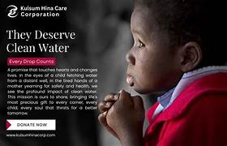

Empowering NGOs through Crowdfunding
Join hands to create a meaningful impact by supporting campaigns for education, healthcare, clean water, and more.
Featured Campaigns



About Fund Flow
Fund Flow is a crowdfunding platform designed to empower NGOs and social enterprises by helping them raise funds for meaningful causes. Here's what Fund Flow stands for:
- We connect donors with NGOs working on critical social issues.
- Fund Flow helps raise money for causes such as education, healthcare, clean water, and more.
- Our platform allows NGOs to set clear fundraising goals and track their progress.
- We offer a transparent system where every donation is tracked and accounted for.
- Fund Flow promotes global giving, allowing donors to contribute from anywhere in the world.
- We provide NGOs with tools to create engaging campaigns that attract more donors.
- Our platform includes secure payment gateways to ensure safe transactions for donors and recipients.
- We prioritize collaboration and work closely with NGOs to ensure their success.
- Fund Flow is committed to sustainability, encouraging ongoing relationships between donors and NGOs.
- We believe in making a positive social impact by empowering communities through collective action.